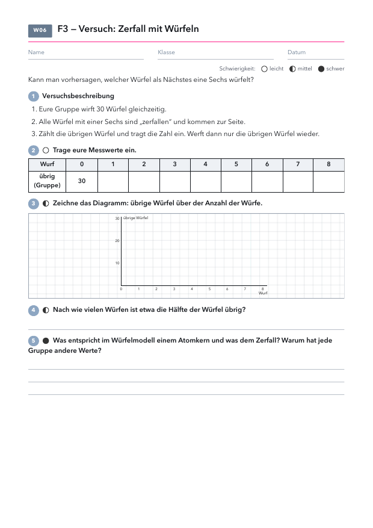
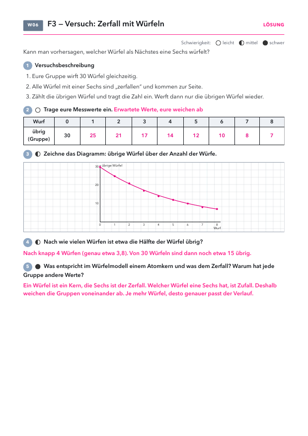

- Optional: Versuchsblatt Zerfall mit Würfeln, Seite 1, eins pro Schüler.
- Folien und Lösungen: nicht drucken.
Material
Demo (für dich)
| Material | Anzahl | Hinweis |
|---|---|---|
| nicht nötig | ||
Schülerversuch (pro Gruppe)
| Material | Anzahl | Hinweis |
|---|---|---|
| Würfel | 30× | 500 Stück bestellt, reicht für 16 Gruppen |
| Würfelbecher oder Schale | 1× |
Die Stunde
Antwort ins Heft, Check.
Leitfrage und Vermutungen sammeln.
Würfelversuch in Gruppen: Beschreibung an der Folie, Werte ins Heft eintragen. Die Tabelle mit Beispielwerten dient zum Vergleich.
Diagramm zeichnen und die Hälfte ablesen, erst leer, dann ausgefüllt.
Und bei 100 Würfeln? Bestätigung im Zerfallslabor, die Kurve wird glatter.
Zufall im Einzelnen, sicher in der Menge.
Labore zur Stunde: 🧪 Zerfallslabor
Warum zerfallen manche Atomkerne von selbst?
Check · KernphysikLeitfrage 2
1Ein Kern sendet ein α-Teilchen aus. Wie ändern sich A und Z?
- A minus 4, Z minus 2
- A minus 2, Z minus 4
- A bleibt, Z plus 1
- Beide bleiben gleich
2Welche Strahlung wird von einem Blatt Papier gestoppt?
- γ-Strahlung
- β-Strahlung
- α-Strahlung
- Keine davon
Lösung · CheckLeitfrage 2
1Ein Kern sendet ein α-Teilchen aus. Wie ändern sich A und Z?
- A minus 4, Z minus 2
- A minus 2, Z minus 4
- A bleibt, Z plus 1
- Beide bleiben gleich
2Welche Strahlung wird von einem Blatt Papier gestoppt?
- γ-Strahlung
- β-Strahlung
- α-Strahlung
- Keine davon
Wie schnell zerfällt ein radioaktiver Stoff?

KernphysikVersuch: Zerfall mit Würfeln
Material und Aufbau
- 30 Würfel pro Gruppe
- Würfelbecher oder Schale
Durchführung
- Eure Gruppe wirft 30 Würfel gleichzeitig.
- Alle Würfel mit einer Sechs sind „zerfallen“ und kommen zur Seite.
- Zählt die übrigen Würfel und tragt die Zahl ein. Werft dann nur die übrigen Würfel wieder.
- Bis zu acht Würfe.
KernphysikPro Wurf zerfällt etwa ein Sechstel der Würfel
KernphysikWie viele Würfe dauert es, bis die Hälfte übrig ist?
KernphysikNach knapp vier Würfen ist die Hälfte der Würfel übrig
KernphysikUnd was passiert bei 100 Würfeln?
KernphysikEin einzelner Kern zerfällt zufällig, viele Kerne zerfallen berechenbar
| im Alltag | was man sieht | warum |
|---|---|---|
| Popcorn | Welches Korn zuerst platzt, weiß keiner. | Nach drei Minuten sind trotzdem fast alle aufgeplatzt. |
| Glühlampen einer Lieferung | Jede hält unterschiedlich lange. | Der Hersteller kennt trotzdem die mittlere Lebensdauer. |
| Würfel im Versuch | Welcher Würfel eine Sechs hat, ist Zufall. | Pro Wurf fällt trotzdem etwa ein Sechstel weg. |
Antwort: Wann ein einzelner Kern zerfällt, ist Zufall. Bei Milliarden Kernen gleichen sich die Zufälle aus: In gleicher Zeit zerfällt immer etwa derselbe Anteil.
So steht es am Ende der Stunde im Heft: Überschriften abschreiben, Zeichnungen abzeichnen, Merksätze abschreiben, die Antwort auf die Leitfrage. Beobachte-, Alltags- und Check-Folien kommen nicht ins Heft. „Fortsetzung“ heißt: im Heft ohne neue Überschrift weiterschreiben.
Fortsetzung Leitfrage 2Warum zerfallen manche Atomkerne von selbst?
Antwort auf Leitfrage 2
Leitfrage 3Wie schnell zerfällt ein radioaktiver Stoff?
Pro Wurf zerfällt etwa ein Sechstel der Würfel
Nach knapp vier Würfen ist die Hälfte der Würfel übrig
Ein einzelner Kern zerfällt zufällig, viele Kerne zerfallen berechenbar
Abschluss Leitfrage 2
- Die Antwortfolie ins Heft, der Check per Handzeichen. Lösung: 1 a, 2 c.
- Wer die Zerfallsgleichungen noch nicht sicher kann: Übung im Strahlungslabor.
Das Würfelmodell
- Jede Runde fällt im Mittel ein Sechstel weg, übrig bleiben 5/6. Nach etwa 3,8 Würfen ist die Hälfte weg. Das ist die „Halbwertszeit“ des Modells.
- Die Gruppenwerte streuen stark. Die Summe der ganzen Klasse passt viel besser zur Kurve. Deshalb die Klassenwerte an der Tafel addieren.
- Grenze des Modells: Echte Kerne zerfallen nicht in Runden, sondern zu jedem beliebigen Zeitpunkt. Die Wahrscheinlichkeit pro Zeit ist aber genauso fest.
- Typische Fehlvorstellungen: Nach zwei Halbwertszeiten ist alles zerfallen. Ein Kern, der lange nicht zerfallen ist, ist „bald dran“.
Material
- 500 Würfel sind bestellt, das reicht für 30 Würfel pro Gruppe bei bis zu 16 Gruppen. Alternative: 30 Münzen pro Gruppe, „Zahl“ scheidet aus. Dann halbiert sich die Zahl schon pro Wurf.
Zerfallslabor
Labor öffnen100 Würfel Wurf für Wurf, drei Zufallsserien, dazu der Zerfall von Fluor-20 als Animation mit Uhr und Messpunkten (nach der LEIFI-Animation).
Alternative: Versuchsblatt Zerfall mit Würfeln
PDF öffnenLösung: Erwartete Werte 30, 25, 21, 17, 14, 12, 10, 8, 7. Hälfte nach knapp 4 Würfen. Würfel = Kern, Sechs = Zerfall, die Abweichung kommt vom Zufall.

